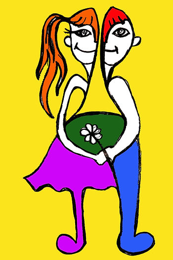
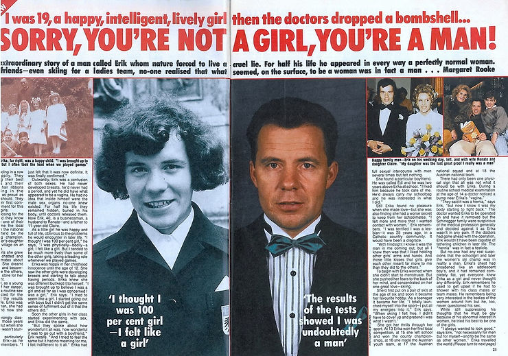
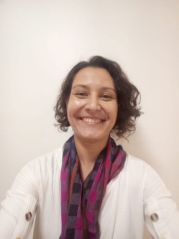

Em minha pesquisa de doutorado sobre a participação de atletas trans e intersexo no esporte olímpico uma questão parece fundamental: por que é banalmente aceitável a abordagem científica que propõem a remodelagem obrigatória de determinadas estruturas e/ou substâncias corporais quando o assunto é inclusão?
Desde o início das discussões sobre o tema da elegibilidade pelo Comitê Olímpico Internacional (COI) em 2003, a ideia de “correção” ou adaptação do corpo dessas atletas às noções ocidentais de feminilidade tem aparecido como necessidade última. Entre 2003 e 2015, a chamada cirurgia de redesignação sexual era considerada fator determinante à inclusão nas competições. Após esse período, a terapia hormonal para redução dos níveis sanguíneos de testosterona, tanto para mulheres trans como intersexo, firmou-se a regulamentação oficial, e tem sido a condição mais aceita socialmente, inclusive, por contar com o aval de parte da comunidade científica.
Assim, nas últimas semanas – e após a decisão do COI no começo do ano de distribuir a tarefa de elegibilidade às Federações Internacionais (FI) – viu-se a reorganização e o estreitamento dos regulamentos de duas modalidades olímpicas. Na natação, somente mulheres-trans que fizeram a terapia de supressão de testosterona antes dos 12 anos de idade poderão participar, e sugeriu-se a criação de uma categoria específica para as atletas que não se encaixarem nesse perfil. No ciclismo as regras são outras, as mesmas atletas deverão apresentar exames sanguíneos que comprovem níveis de testosterona inferiores a 2,5 nmol/l nos dois últimos anos (quando ainda sob decisão do COI, os níveis permaneciam em 10 nmol/l).
Minhas preocupações com relação a esse tipo de aplicação estão relacionadas em primeira instância a continuação de uma série de experimentos na tentativa de moldar o corpo aos regulamentos institucionais. Conforme menciona a atleta intersexo de Uganda, Annet Negesa, no documentário Kampf Ums Gestchlecht: die verstossenen frauen des sports (Batalha do gênero: as mulheres rejeitadas do esporte), após inúmeras análises de seu corpo a World Athletics (Federação de Atletismo) definiu como única solução de elegibilidade um processo cirúrgico que levou a redução do seu bem-estar geral e da capacidade atlética, o que a impediu não só de participar dos Jogos de Londres-2012, como de alcançar níveis excelentes de rendimento por 8 anos.
Tais práticas, contudo, não estão dissociadas da busca obstinada por um modelo universal, estável e binário de gênero, nem das noções estereotipadas da população LGBTQIA+ historicamente situadas entre a perversão, a anormalidade e a patologia (a transexualidade, por exemplo, saiu da lista de transtornos mentais da Associação Psiquiátrica Americana somente em 2012). Para Missé (2013, p. 66): “O corpo das pessoas trans se apresenta constantemente localizado no paradigma do erro. Como se realmente tivesse havido um problema em algum momento, e por erro, tivéssemos nascido em um corpo que não é nosso, mas que, com sorte, podemos recuperar”.
Dessa maneira, tais pessoas são colocadas na esteira da objetificação por um discurso perene que as reduz a um número de intervenções cirúrgicas e, no esporte, a moléculas de testosterona. Nos dizeres de Kilomba (2019, p. 28): “Como objetos […] nossa realidade é definida por outros, nossas identidades são criadas por outros”. Isso também ocorre porque o gênero é uma categoria que humaniza, ou seja, do modo como a maioria das sociedades está estruturada, só se reconhece humanidade em um corpo que apresenta a lógica binária (homem/mulher). O corpo que atua fora dessa constante não consegue ser lido enquanto humano, tornando legítimas e aceitáveis as violências aplicadas a ele.
O que parece urgente, portanto, é a necessidade de implementar medidas no ambiente esportivo que permitam a retomada da humanização dessas atletas. Ouvi-las, sem dúvida, é parte da força-tarefa. Barrar as análises e testagens corporais e a ideia de presunção de vantagem são outros complementos já propostos neste ano pelo COI, mas que continuam ignorados por algumas FIs.
No mais, sugiro algumas perguntas provocativas para se pensar o assunto. A primeira é: que modelo esportivo se quer salvar quando a presença trans e intersexo causam estranheza e proibição apenas na categoria feminina? A outra seria: que plasticidade os regulamentos esportivos oferecem no lugar de forçar os corpos à adequação de um modelo esportivo de raiz sexista, aristocrática, colonial e capitalista?

LEGENDA DA IMAGEM
Erik Schinegger, atleta de esqui que optou pelo processo de transição de gênero, após ser barrado na categoria feminina devido ao teste de verificação de gênero implementado pelas autoridades esportivas na década de 1960. (O título da reportagem diz: “Desculpe, você não é uma garota, você é um homem!”. Disponível no site oficial de Erik Schinegger: https://www.schischule-schinegger.at/Presse/ Acesso em: 15/03/2020.)
REFERÊNCIAS
MISSÉ, M. Transexualidades: otras miradas posibles. España: Egales, 2013.
KILOMBA, G. Memórias da plantação: episódios de racismo cotidiano. Rio de Janeiro: Cobogó, 2019.

MINI-CURRÍCULO
Waleska Vigo Francisco
Graduada em Educação Física pela Faculdades Integradas de Santo André (2004).
Especialista em Condicionamento Físico Aplicado à Prevenção Cardiológica Primária e Secundária pelo Instituto do Coração do Hospital das Clínicas (2009).
Doutoranda em Ciências pela Escola de Educação Física e Esporte da USP com pesquisa no campo de gênero, sexualidade e esporte olímpico.
Integrante do Grupo de Estudos Olímpicos (GEO-USP)